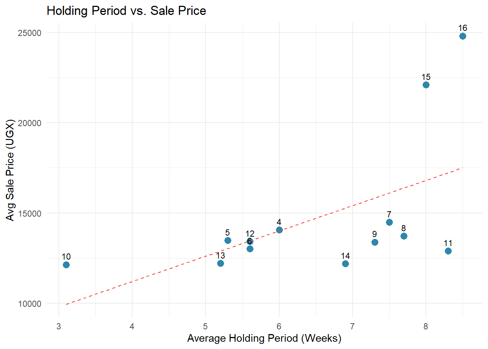
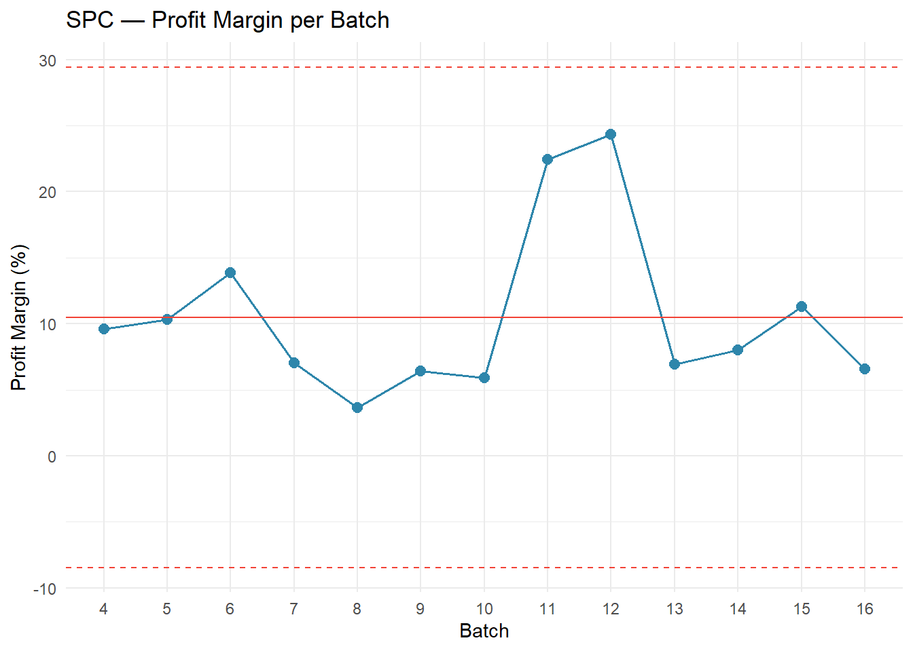
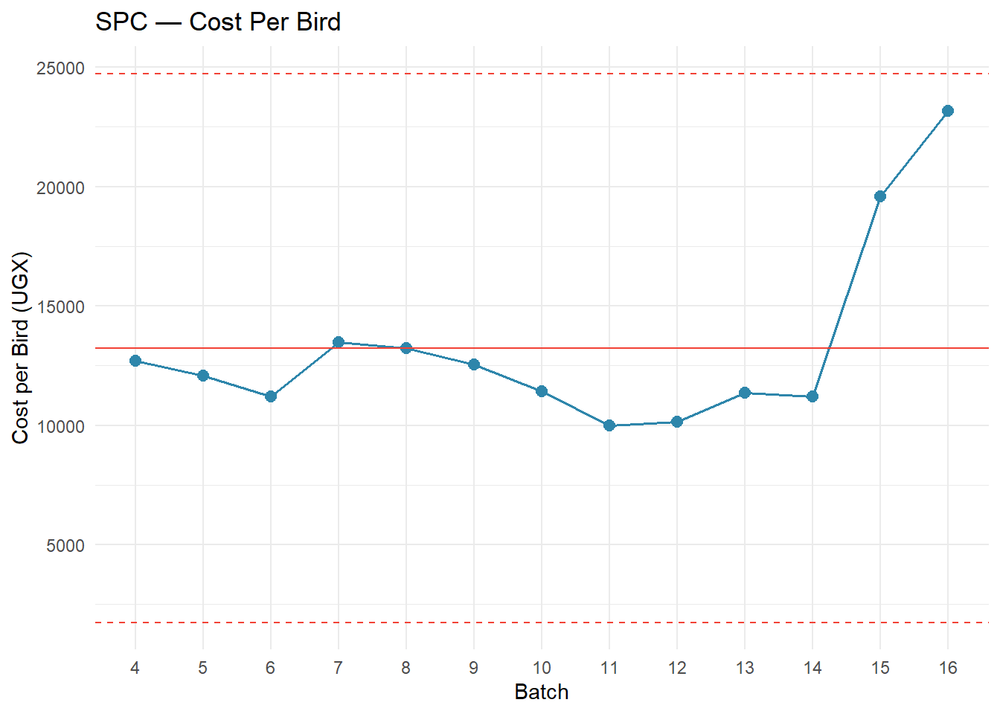
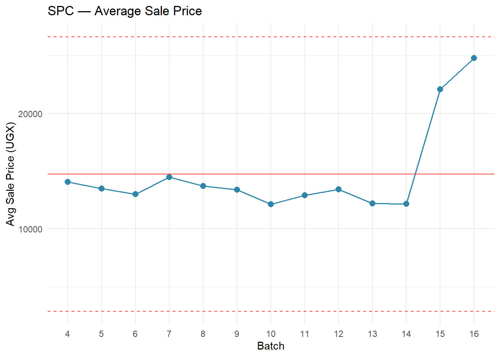
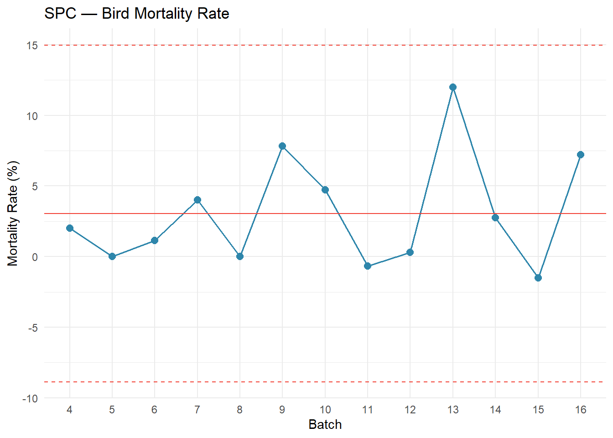
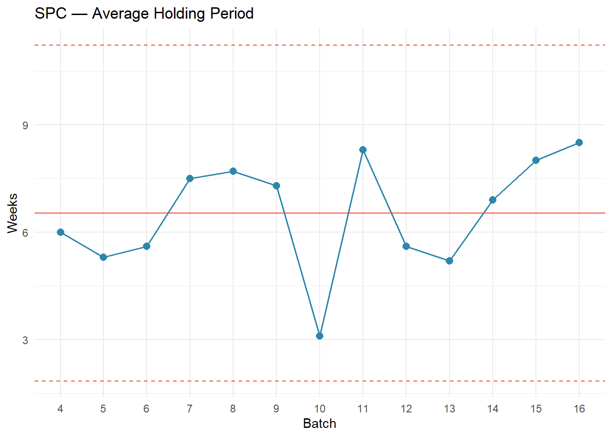

| Financial Performance Summary — Batches 4 to 16 | |||||||
| Batch | Revenue (UGX) | Cost of Production (UGX) | Net Profit (UGX) | Profit per Bird (UGX) | Profit Margin (%) | Cost per Bird (UGX) | Avg Sale Price (UGX) |
|---|---|---|---|---|---|---|---|
| 4 | 3,444,000 | 3,114,000 | 330,000 | 1,347 | 9.6 | 12,710 | 14,057 |
| 5 | 2,695,500 | 2,417,000 | 278,500 | 1,392 | 10.3 | 12,085 | 13,478 |
| 6 | 4,502,500 | 3,877,700 | 624,800 | 1,806 | 13.9 | 11,207 | 13,013 |
| 7 | 4,867,000 | 4,525,500 | 341,500 | 1,016 | 7.0 | 13,469 | 14,485 |
| 8 | 4,116,000 | 3,965,500 | 150,500 | 502 | 3.7 | 13,218 | 13,720 |
| 9 | 7,403,500 | 6,928,000 | 475,500 | 860 | 6.4 | 12,528 | 13,388 |
| 10 | 8,095,000 | 7,616,500 | 478,500 | 717 | 5.9 | 11,419 | 12,136 |
| 11 | 3,895,000 | 3,020,200 | 874,800 | 2,897 | 22.5 | 10,001 | 12,897 |
| 12 | 4,684,000 | 3,543,600 | 1,140,400 | 3,268 | 24.3 | 10,154 | 13,421 |
| 13 | 4,298,500 | 4,000,000 | 298,500 | 848 | 6.9 | 11,364 | 12,212 |
| 14 | 4,741,000 | 4,362,100 | 378,900 | 974 | 8.0 | 11,214 | 12,188 |
| 15 | 8,990,000 | 7,974,100 | 1,015,900 | 2,496 | 11.3 | 19,592 | 22,088 |
| 16 | 11,507,000 | 10,752,500 | 754,500 | 1,626 | 6.6 | 23,173 | 24,800 |
JC Farms — Trends (Batches 4–16)
Executive Summary (Batches 4–16)
Looking across our 13 completed batches, we’ve earned about 7M UGX in total profit — but the journey has been uneven. Our margins have ranged from 24% (Batch 12) down to under 4% (Batch 8), and the story behind those numbers is more nuanced than it first appears.
Batches 11 and 12 were our best — they pioneered a holding strategy where we kept some birds well beyond the standard 6–7 week broiler grow-out period1. The result was bigger birds, higher sale prices, and our strongest margins ever. We’ve since committed more fully to this approach, holding most birds for two months or more in Batches 15 and 16. This deliberately increases our feed costs — but it also unlocks premium pricing, with Batch 15 selling at 22,000+ UGX per bird.
The key question now is whether we’re finding the right balance. Feed costs have climbed from 31% of revenue (Batch 11) to 71% (Batch 16), and while some of that is the expected cost of holding longer, the margin compression suggests we haven’t fully optimized the trade-off yet. Most of our batches keep mortality well under control, which is encouraging. The challenge ahead is refining our holding strategy — finding the sweet spot where the extra sale price more than covers the extra feed.
Bird Production Efficiency
Most of our batches do well here — Batches 5 and 8 lost zero birds, and the majority stay under 4% mortality. But when things go wrong, they go wrong badly. Batch 13 lost 12% of its flock, and Batches 9 and 16 each lost over 7%. Every bird that dies is money we already spent on chicks, feed, and medicine with no return. The table below tells the full story for each batch.
| Bird Production Summary — Batches 4 to 16 | ||||
| Batch | Birds Purchased | Birds Sold | Birds Lost (Mortality) | Mortality Rate (%) |
|---|---|---|---|---|
| 4 | 250 | 245 | 5 | 2.0 |
| 5 | 200 | 200 | 0 | 0.0 |
| 6 | 350 | 346 | 4 | 1.1 |
| 7 | 350 | 336 | 14 | 4.0 |
| 8 | 300 | 300 | 0 | 0.0 |
| 9 | 600 | 553 | 47 | 7.8 |
| 10 | 700 | 667 | 33 | 4.7 |
| 11 | 300 | 302 | −2 | −0.7 |
| 12 | 350 | 349 | 1 | 0.3 |
| 13 | 400 | 352 | 48 | 12.0 |
| 14 | 400 | 389 | 11 | 2.8 |
| 15 | 401 | 407 | −6 | −1.5 |
| 16 | 500 | 464 | 36 | 7.2 |
Holding Period — How Long We Keep Our Birds
One of the most important shifts in our operation has been how long we hold birds before selling. The standard broiler cycle is about 6–7 weeks2 — raise the chicks, sell them as soon as they reach market weight. That’s how we ran our earlier batches. But starting with Batches 11 and 12, we experimented with keeping some birds longer, and the results were striking: bigger birds, higher prices, and our best margins ever.
Since then, we’ve leaned further into this strategy. Batches 15 and 16 held most birds for two months or more. The trade-off is real — longer holding means more feed cost. After about week 8, feed intake plateaus (birds eat roughly the same amount each week rather than increasing), but the feed conversion ratio worsens — each additional week of feeding adds nearly the same feed cost while producing less weight gain3. The strategy pays off when the higher sale price for bigger birds more than compensates for the accumulated extra feed.
The table below shows how long each batch was held (estimated from first feed purchase to first and last sale), alongside the financial outcome. This helps us see whether the longer hold is paying off.
| Holding Period vs. Financial Outcome — Batches 4 to 16 | |||||
| Batch | Avg Holding (Weeks) | Weeks to First Sale | Weeks to Last Sale | Avg Sale Price (UGX) | Profit/Bird (UGX) |
|---|---|---|---|---|---|
| 4 | 6.0 | 5.0 | 6.9 | 14,057 | 1,347 |
| 5 | 5.3 | 4.6 | 6.0 | 13,478 | 1,392 |
| 6 | 5.6 | 4.9 | 6.3 | 13,013 | 1,806 |
| 7 | 7.5 | 5.3 | 9.7 | 14,485 | 1,016 |
| 8 | 7.7 | 5.1 | 10.3 | 13,720 | 502 |
| 9 | 7.3 | 5.0 | 9.7 | 13,388 | 860 |
| 10 | 3.1 | 2.4 | 3.9 | 12,136 | 717 |
| 11 | 8.3 | 8.1 | 8.6 | 12,897 | 2,897 |
| 12 | 5.6 | 4.0 | 7.1 | 13,421 | 3,268 |
| 13 | 5.2 | 4.6 | 5.9 | 12,212 | 848 |
| 14 | 6.9 | 4.4 | 9.4 | 12,188 | 974 |
| 15 | 8.0 | 5.3 | 10.7 | 22,088 | 2,496 |
| 16 | 8.5 | 7.1 | 9.9 | 24,800 | 1,626 |
`geom_smooth()` using formula = 'y ~ x'
What’s Actually Driving Our Results?
When we look across all 13 batches, three things stand out as making or breaking a batch — and they’re all connected to how long we hold our birds:
1. Feed costs are a trade-off we’re making deliberately — but we need to watch the ratio. In Batch 11, feed was 31% of our revenue. By Batch 16, it had climbed to 71%4. Much of that increase is expected: we’re holding birds for two months instead of four weeks, so of course we buy more feed. But the question is whether the extra revenue from bigger, more valuable birds is covering that extra cost. In Batch 11, the answer was a clear yes (22.5% margin). In Batch 16, the math is tighter (6.6% margin). We need to track feed cost per bird per week to find where the sweet spot is.
2. Cost per bird is higher because we hold longer — but the spread is what matters. Our best batches (11 and 12) ran at about 10,000 UGX per bird5. Batch 16 cost us 23,000 UGX per bird. That looks alarming, but Batch 16 also sold at 24,800 UGX per bird — the highest sale price of any batch. The real metric isn’t cost per bird alone; it’s the gap between cost and sale price. In Batch 12, that gap was 3,269 UGX/bird. In Batch 16, it was only 1,627 UGX/bird. We’re spending more but not earning proportionally more.
3. Holding longer enables premium pricing — and that’s our competitive advantage. Batch 8 made only 3.7% margin despite zero bird losses — the problem was selling at standard prices (13,720 UGX/bird) after a shorter hold. Compare that to Batch 15, which held birds longer, sold at 22,000+ UGX/bird, and earned the highest profit per bird of any batch. The holding strategy works, but only when paired with the right buyers and selling discipline.
How to Read These Charts
Each chart below shows one metric across all our batches. The solid red line is our average, and the dashed red lines mark the range of “normal” variation. If a batch falls inside the dashed lines, it’s performing within the expected range — nothing unusual. If a batch lands outside those lines, something genuinely different happened that batch, good or bad, and it’s worth understanding why.
Warning: Using `size` aesthetic for lines was deprecated in ggplot2 3.4.0.
ℹ Please use `linewidth` instead.




Bird Mortality: When We Lose Birds, We Lose Twice
Every bird that dies costs us twice — we’ve already paid for the chick, the feed, and the medicine up to that point, and we get zero revenue back. Our average mortality across all batches is around 3%, which is within the global commercial target of 2–4%. For a small-scale East African operation like ours, consistently staying below 5% is actually excellent performance6. So overall, we’re doing well. But the averages hide some painful batches.
Batch 13 is the one that should keep us up at night. We lost 48 out of 400 birds — a 12% mortality rate, three to four times our normal level. That’s roughly 48 birds × 13,000 UGX average sale price = over 600,000 UGX in lost revenue from that single batch, on top of the feed and medicine we’d already spent on those birds. We need to understand what went wrong — was it disease, water, ventilation, feed quality? Until we know, it could happen again.
Batches 9 and 16 also had elevated losses at 7–8%, while Batches 5, 8, and 12 proved that near-zero mortality is absolutely achievable. The difference between our best and worst batches on mortality alone is worth hundreds of thousands of shillings per cycle.
What the Data Is Telling Us
1. The holding period trade-off — are we finding the sweet spot?
The shift to longer holding periods is a smart strategy. Bigger birds command higher prices, and research suggests that profitability per bird peaks at around 7 weeks (49 days)7. Beyond that, feed conversion worsens — birds eat nearly the same amount but gain less weight8 — so the economics of each additional week depend on whether we can sell at a premium that covers the extra feed. Batches 11 and 12 proved this can work beautifully — they held some birds longer, earned premium prices, and kept feed costs at just 31–39% of revenue.
But the data suggests we haven’t fully dialed in the trade-off for our recent full-flock long holds. In Batch 16, feed consumed 71% of revenue. Even accounting for the longer holding period, that’s a lot. Some questions worth tracking:
- How many kilograms of feed per bird per week are we actually using? Is it plateauing after week 8 like research suggests9?
- Are we losing feed to spoilage, spillage, or poor storage — especially over longer holding periods?
- Have feed prices themselves gone up from our suppliers? Holding longer amplifies any price increase.
What to do: For the next batch, record feed in kilograms per bird per week. This one number will tell us whether the feed ratio is high because of the holding period (expected) or because of waste and pricing (fixable).
2. The Batch 11–12 model — partial holding may be the winning formula
These two batches achieved 22–24% profit margins, and a key reason is that they didn’t hold all birds for the full extended period. They sold some birds at the standard 6–7 week mark and kept others longer. This blended approach — known in the industry as “thinning” or partial depopulation10 — has a real advantage: the early sales generate cash to cover ongoing feed costs, while the longer-held birds earn the premium prices.
Compare this to Batches 15 and 16, where we held most of the flock for two months or more. The margins were much thinner (6–11%) even though the sale prices were higher. Holding the entire flock longer means all the feed costs stack up before any revenue comes in.
What to do: For the next batch, consider splitting the flock. Sell 40–50% of the birds at the normal 6–7 week mark to recover costs, and hold the remaining 50–60% for 8+ weeks to earn the premium. This mirrors what worked in Batches 11 and 12.
3. Scaling and holding are both pushing costs up — we need to separate the effects
Our cost per bird went from ~10,000 UGX (Batches 11–12, 300–350 birds, partial long hold) to ~23,000 UGX (Batch 16, 464 birds, full long hold). That’s a big jump, and it’s driven by two things at once: larger flocks and longer holding periods. We need to figure out how much of the cost increase is from each.
If most of the increase is from holding longer, that’s expected and potentially fine — as long as the sale price covers it. If a significant portion is from scaling inefficiency (more waste, more labor, worse feed conversion at higher bird counts), then we have an operational issue to fix.
What to do: The next time we run a batch of 300–350 birds with a full long hold, compare the cost per bird to Batch 16. If it’s significantly lower, the scale is the problem. If it’s similar, the holding period is the main driver and we should focus on optimizing feed efficiency during the hold.
4. Mortality spikes are preventable — and more costly when we hold longer
Our average mortality (about 3%) is fine. The problem is the spikes — Batch 13 lost 12% of its birds, and Batches 9 and 16 each lost 7–8%. Meanwhile, Batches 5, 8, and 12 achieved near-zero losses, so we know the farm can do it.
Mortality becomes even more expensive with our holding strategy. A bird that dies at week 8 has consumed far more feed than one that dies at week 2. Every bird lost late in a long hold represents a bigger investment gone to waste.
What to do:
- Start a daily mortality log11. Every morning, count and record how many birds died overnight and note any symptoms — droopy, not eating, diarrhea, respiratory issues.
- If we lose more than 2 birds in a single day, treat it as an alert. Check water, feed freshness, ventilation, and temperature immediately. Industry guidelines recommend investigating any day where mortality exceeds 0.1% of the flock.
- Pay special attention during weeks 6–10. If mortality is creeping up during the extended hold, it may make sense to sell the remaining birds earlier rather than lose more.
- Batch 13 needs a post-mortem. If we haven’t documented what happened, let’s at least write down what the team remembers.
What We Should Do Next
This week:
- Start the daily mortality log — a simple notebook at the farm is enough
- Weigh feed before distributing and record how many kilograms go out each day, per batch
- Write down everything we remember about how we ran Batches 11 and 12 — especially the split between early-sold and long-held birds
This month:
- Compare our current feed supplier prices to at least two alternatives
- Contact the buyer(s) from Batch 15 about future sales at premium prices
- Plan the next batch around the split-flock model: sell some at 6–7 weeks, hold the rest for 10+ weeks
- Set targets: mortality under 4%, feed cost per bird per week tracked and compared to Batch 11–12 levels
Going forward:
- Review this report together after each batch closes — look at holding period alongside margin to understand the trade-off
- Track feed cost per bird per week as our core efficiency metric — it accounts for holding period and lets us compare batches fairly
- If mortality exceeds 5% during an extended hold, consider selling the remaining birds early rather than risking further losses
- Experiment: run one batch at 300–350 birds with the split-hold model and compare results to recent larger batches
Report Generated: March 8, 2026 — JC Farms Financial & Operational Analytics
Methodology: Shewhart SPC with ±3σ control limits | Data Period: Batches 4–16
Footnotes
The standard commercial broiler grow-out period is 42–49 days (6–7 weeks). In Uganda, birds are typically raised for 5–8 weeks depending on target market weight. Sources: The Poultry Site; Aaron Vet Farms.↩︎
The standard commercial broiler grow-out period is 42–49 days (6–7 weeks). In Uganda, birds are typically raised for 5–8 weeks depending on target market weight. Sources: The Poultry Site; Aaron Vet Farms.↩︎
Broiler feed intake does not decrease after week 8 — it plateaus. However, the feed conversion ratio worsens significantly: birds consume nearly as much feed as the prior week but gain substantially less weight, making each additional week of feeding progressively less cost-effective. Sources: Jahan Kaveh Broiler Feed Guide; Veterinaria Digital.↩︎
Feed typically represents 60–70% of total broiler production cost globally. As a percentage of revenue, a healthy target is 50–55%; above 60% signals that feed efficiency or pricing needs investigation. Sources: MDPI Agriculture (2023); Aaron Vet Farms.↩︎
The average cost of raising a single broiler in Uganda is approximately UGX 9,681 for a standard 6-week cycle. JC Farms’ best batches (11 and 12) at ~10,000 UGX per bird are right at this benchmark, while longer-held batches naturally cost more. Source: Aaron Vet Farms (2025).↩︎
The 2–4% mortality target is the global commercial benchmark. For small-scale East African operations, 5–8% is a more realistic near-term target — achieving consistently below 5% represents excellent performance relative to regional peers. A Zambia study found backyard broiler farmers averaged 7.6% mortality. Sources: Champrix; Frontiers in Sustainable Food Systems (2025).↩︎
Research suggests profitability per bird peaks at approximately 49 days (7 weeks). Beyond this, diminishing returns set in due to worsening feed conversion. However, in markets where birds are sold live per-piece rather than by weight, larger birds command premiums that can offset the efficiency loss. Sources: Mansoura Vet Medical Journal; ScienceDirect.↩︎
Broiler feed intake does not decrease after week 8 — it plateaus. However, the feed conversion ratio worsens significantly: birds consume nearly as much feed as the prior week but gain substantially less weight, making each additional week of feeding progressively less cost-effective. Sources: Jahan Kaveh Broiler Feed Guide; Veterinaria Digital.↩︎
Broiler feed intake does not decrease after week 8 — it plateaus. However, the feed conversion ratio worsens significantly: birds consume nearly as much feed as the prior week but gain substantially less weight, making each additional week of feeding progressively less cost-effective. Sources: Jahan Kaveh Broiler Feed Guide; Veterinaria Digital.↩︎
Partial depopulation (“thinning”) is standard commercial practice. A 2022 study found that stopping thinning would reduce profit per production cycle by 31%. The remaining birds benefit from more space, better air quality, and improved growth rates. Sources: MDPI Animals (2022); Poultry World.↩︎
Daily mortality recording is universally recommended by the FAO, commercial integrators, and animal welfare bodies. Recommended thresholds: first week mortality should not exceed 0.5% per day; after the first week, daily mortality above 0.1% warrants attention and above 0.5% requires immediate investigation. Sources: FAO Poultry Disease Manual; Champrix.↩︎